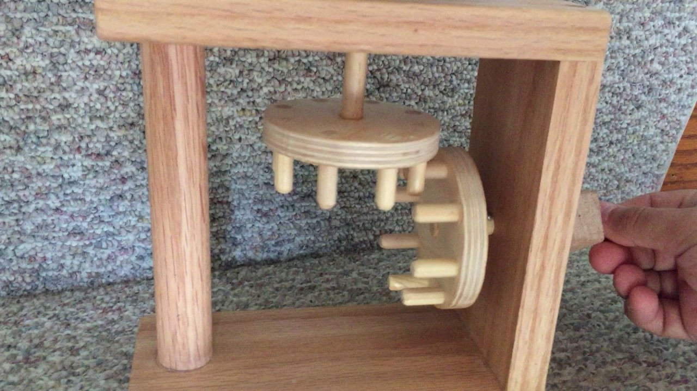
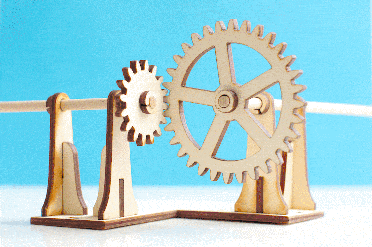
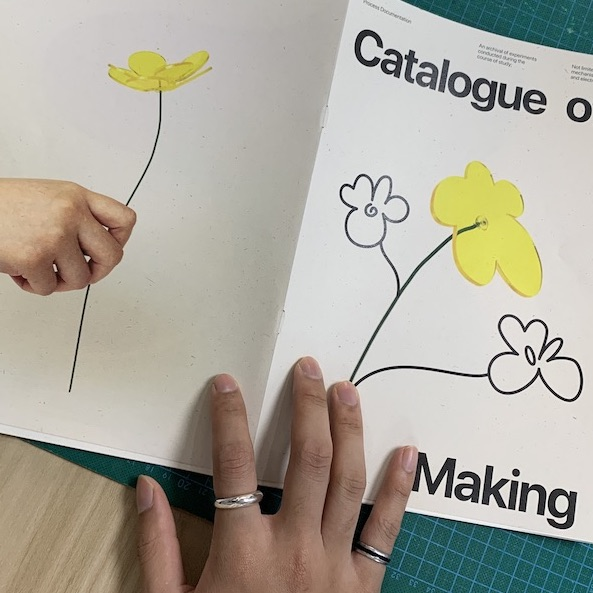
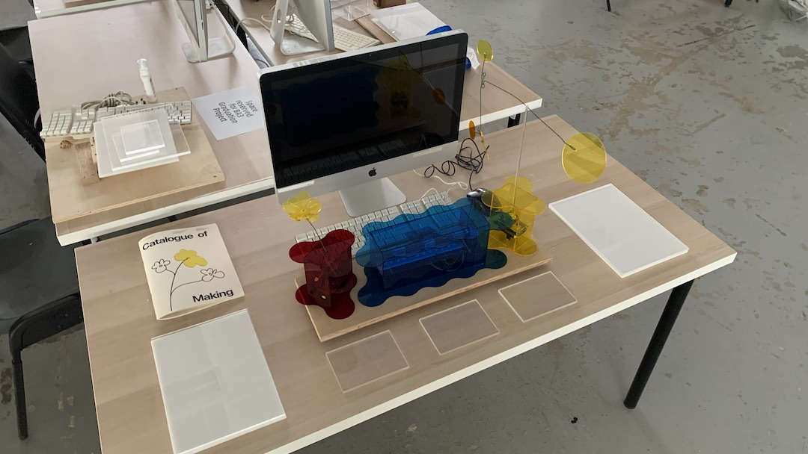
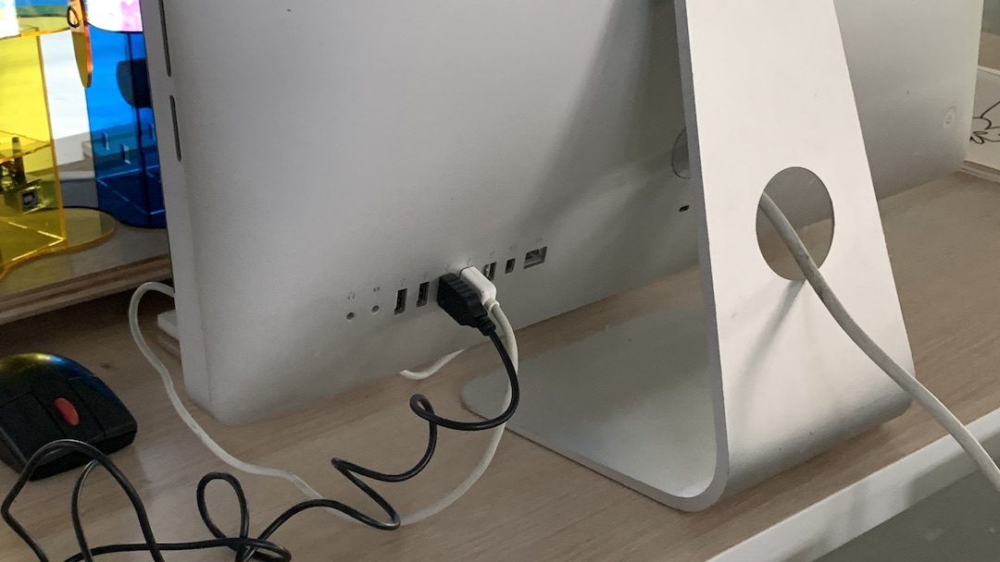

Week 15: Work Continues
This is it.
With just about a week left before final subs, time is running out fast and there's so many more things to do.
Gear Mechanism
Following last week's continued experimentation on gears, where I shifted the bulk of electronics to the bottom of the object, the next problem was to figure out how to get the horizontal movement of the motor to be vertical and support the plant's expected movement.
Current Gears
The current set of gears that I have from last week don't seem to be able to work in the new orientation because the teeth get stuck between each other. I'm not sure what's the math behind it or whether it's related to the shape of the teeth. Honestly quite a brain wrecking activity to try and figure this one out. I ended up laser cutting quite a fair bit of failed attempts trying to make sure each teeth interlocks precisely for a smooth movement but they still keep hitting each other.
Cage and Peg

Chanced upon this gear mechanism while doing up research on types of gears.
They seem simple enough that the thin dowels allow some leeway for interlocking while still being tall enough that they don't disconnect from each other. But creating this with acrylic may be harder than it looks because based on the main cam mechanism, the acrylic rod seems to shift and not stay perpendicular despite being a tight fit and glued with acrylic glue.
Right Angle Gears
After many failed attempts at making the dowel and original gears to work, I took a trip to Sim Lim Tower in hopes of finding a right angle gear. Unfortunately, no one seemed to be selling any and I went back to the laser room disappointed.
Limited to the laser cutting machine, I added the term into my current search for right angle gears and found this experiment that seemed to work well. Some areas based on this image that I thought I could refine were the sharpness of the teeth where they look like slightly bloated triangles and play with different sized gears.
Got It!
After so many different cuts, I finally got to a gear ratio that could fit each other, maintain contact and not shift around from constant movement.
Setting the Table
Catalogue of Making
Went to SinPrint as usual to print. Faced an issue where I requested for OK Kaiser hoping to get the 93gsm option. But instead it came out thicker and when asked, the print shop Da Jie (big sis) said that they had run out of the thinner option and are left with a slightly thicker paper stock.  It looks great just that it feels a little thick and to be honest I wanted it to flip similar to how Atelier HOKO does their books. But I don't intend on spending any more on printing so what's done is done. At least there aren't any typos or wrong pagination.
Table Display
I don't want to clutter my desk space with as many things as I had during Open Studios. Granted we only have 7 minutes to present, I feel like alot of text content should only display main points that can be designed nicely to look purposeful.

Left
Starting from left, it should begin with a Key Visual, in this case a poster that holds the project title and some text that describes the definition and purpose of the project.
It'll also be where the Catalogue of Making lives and I might go through some interesting points of learning, especially for the internal mechanisms.
Center
In the center, would be the bulk of my explanation where the iMac plays a video showcasing how people interact with the artefacts.

In front of it will be the 3 artefacts, powered by the the iMac since it has more than enough USB ports. I'm wondering whether they should also be interactive since I can connect them onto the p5.js sketch but that's some extra work that I haven't figured out yet (my current interactive code is done on VS Code which isn't available on the school's computers).
Right
Then it'll end with my 3D rendered mockup visualisation of how the artefacts would look displayed in a hospital waiting room.
Always make time for Pizza.